MODEL
Lambda: 1.0
Dataset structure: 800 sequences with 100 features
Number of architectures in the best model: 11
Likelihood of best model: -94524.1159666
Architecture 1: 51 sequences with 55 important features
Sequence logo for the important positions in architecture 1
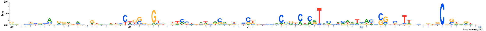
Architecture 2: 74 sequences with 52 important features
Sequence logo for the important positions in architecture 2
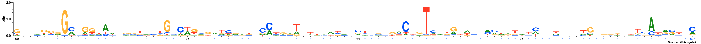
Architecture 3: 47 sequences with 58 important features
Sequence logo for the important positions in architecture 3
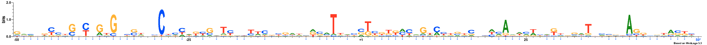
Architecture 4: 12 sequences with 56 important features
Sequence logo for the important positions in architecture 4
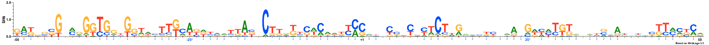
Architecture 5: 39 sequences with 56 important features
Sequence logo for the important positions in architecture 5
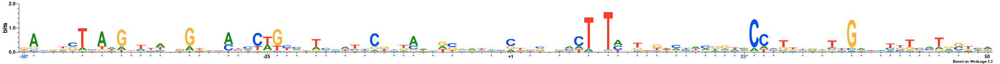
Architecture 6: 79 sequences with 53 important features
Sequence logo for the important positions in architecture 6
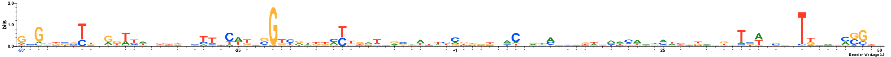
Architecture 7: 101 sequences with 64 important features
Sequence logo for the important positions in architecture 7
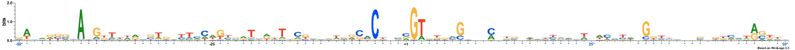
Architecture 8: 127 sequences with 53 important features
Sequence logo for the important positions in architecture 8
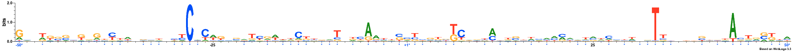
Architecture 9: 11 sequences with 64 important features
Sequence logo for the important positions in architecture 9
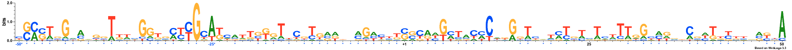
Architecture 10: 208 sequences with 58 important features
Sequence logo for the important positions in architecture 10
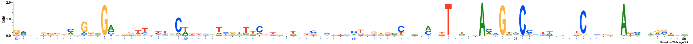
Architecture 11: 51 sequences with 61 important features
Sequence logo for the important positions in architecture 11
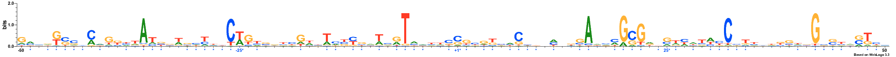
NOTE: All important positions in the logos are followed by an asterisk symbol and are coloured blue